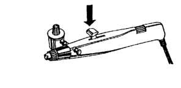
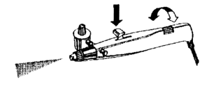
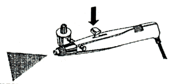
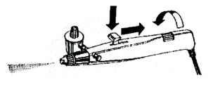

The Aztek 3000S is very user friendly for first time airbrush users. It is light, easy to clean and simple to use. First, the body of the brush is streamlined and lightweight. Second, if you purchase the airbrush kit you will get four tips that will take care of high flow, general purpose, fine line, and splatter effect.

The first tip I will use is the turquoise, which is the high flow tip. The high flow is for doing large areas with a lot of paint. Like applying a base coat to this predator trophy. You can also use thicker paints with a high flow tip.
The next tip I will use is the gray tip. This tip is a general purpose tip. It has a wide range of uses. With the general purpose tip I can do gradual shading, I can create the different patterns on the predator's head and face. With the general purpose tip you will need to thin your paints. (Which I recommend for all tips.)

The next tip is the tan tip which is my fine line tip. With the fine line tip I can do exactly what the name says. I can produce fine lines, detail work and very fine mists. I will use it to put the finishing details on the Predator's face. With the fine line tip I will make the paint very thin. The last tip I am going to describe is the pink tip, which is my spatter tip. I will not be using this tip on my Predator but will describe its uses. The spatter tip is used for creating stippling affects (a lot of dots spaced apart at different densities to create shading or patterns). It's great for creating stone affects, cloth patterns and textures.
That is basically all there is to the different tips for the Aztek 3000S.
Now I am going to explain the workings of the double action trigger on this airbrush.
After you have assembled the airbrush as the instructions tell you, (which is very simple to accomplish), this airbrush can be used in a single action or double action manner.
To use single action is simply to be able to press down on the trigger and get paint out of the brush. To do this the Aztek 3000S has an adjustment roller on the back of the brush. Just press the trigger and adjust this roller until the correct amount of paint that you desire comes out of the tip. Once that adjustment is reached, then you can press down on the trigger and get the same steady flow every time. To get a larger or smaller flow, adjust the roller and repeat the process.
| 1.) Press trigger down completely. Do not pull trigger back. |  |
| 2.) Adjust roller so that desired amount of spray is emitted. To increase or decrease amount of spray adjust roller. |  |
 |
|
| 3.) Downward pressure on trigger without pulling back will repeat the line. |  |
To use this brush in a double action manner is going to take a little more practice, but once you get the hang of it you will have no problems. Double action is where the amount of air and paint are controlled by only the trigger. Pushing down and forwards or backwards on the trigger will determine the amount of paint coming out of the brush. To increase the amount of paint spray, just pull the trigger back. To decrease the amount of paint spray, just move the trigger forward.
| 1.) Press down on trigger until it bottoms out. Do not pull back. Adjust roller so no media is discharged when trigger is fully depressed. |  |
| 2.) Begin pulling trigger back and hold it. Adjust roller so that a small amount of media is discharged (fine line). |  |
| 3.) To increase spray pull trigger back. To decrease spray push forward. |  |
 |
That is about it for using the Aztek 3000S airbrush.
Clean up with the Aztek 3000S is very simple. You just run airbrush thinner through the brush until it comes out clean. There is no major disassembling needed. Although I will usually soak the paint reservoir and the tips in water to make sure they are completely clean.
Another very nice thing about the Aztek 3000S is its design. It is designed to be held in your hand like a paint brush, pen, or pencil. You don't have a large jar hanging off the bottom of the brush or hose attached to awkward places that get in your way.
As I said, this is only one type of airbrush and they all have their pros and cons. I am not trying to get anyone to buy this airbrush over any other. This is the airbrush that I use most and am the most comfortable with. So use whatever you are most comfortable with or are currently using, but if you are just starting out in airbrushing, you might want to give this one a try.
Note: This is the same airbrush produced by Model Master. If you want to learn a lot more about airbrushing, pick up a copy of Airbrush Action Magazine (see this issues "Cool New" section). Have fun airbrushing!
Send any questions, comments, or suggestions to:
Originally published, as black and white, in
KitBuilders Magazine.
Reprinted here, in color, with permission. Thanks, KitBuilders!
The Gremlins in the Garage webzine is a production of Firefly Design. If you have any questions or comments please get in touch.
Copyright © 1994-1997 Firefly Design.